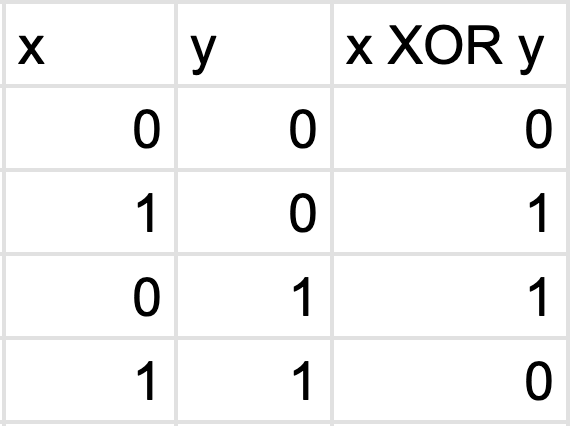

Note: not all ASCII values are printable using text, so if you're encrypting text, your ciphertext on the right (the text version) may look weird. The binary representation on the top is what you should copy and paste if you'd like to decrypt it.
Computers use binary code to represent everything. Binary code is just a different way of writing numbers, and we use 'ASCII' to convert those numbers into characters like numbers or letters.
Both the key (your password) and plaintext (the message you'd like to send) that you're using to encrypt things are strings of characters, so we can convert them both into numbers using binary code.
We can combine your key and plaintext with a special operation called 'XOR' to create a new string of characters, the ciphertext (your encrypted message). This is sort of like taking two numbers and adding them up to get a new one. To decrypt your message, we use the ciphertext and the key to back-track our way into finding our original message.
Example:
To truly understand how a one-time pad works, we must first understand what the operation 'XOR' is. XOR is a bit-wise binary operator, meaning that it works on two inputs (like our key and plaintext) and goes bit by bit, meaning that it operates on each digit separately.
Here is a table that describes the operation XOR. If you have two 0's, 0 XOR 0 = 0. If you have a 0 and a 1, 0 XOR 1 = 1 XOR 0 = 1. If you have two 1's, 1 XOR 1 = 0.
There are a few properties of XOR that makes it really useful for one-time pads.
It's because of these properties that one-time pad has the same algorithm for both encryption and decryption. Let's represent our plaintext, key, and ciphertext with the symbols p, k, c respectively. Our encryption gives us p XOR k = c
Then we decrypt with c XOR k. However, since c = p XOR k, then our decryption is really (p XOR k) XOR k.
Because XOR-ing is associative, we can switch up the grouping of our numbers. That means that our decryption is also p XOR (k XOR k).
We know that XOR-ing anything with itself gives a string of 0's, so k XOR k is a string of 0's. We also know that anything XORed with a string of 0's is itself, so since p is being XORed with a string of 0's in the decryption, our decryption ends up being p itself.